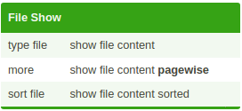
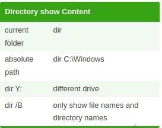

HTML
Home
JavaScript Programming Page
Java Programming Page
Cpp Programming Page
C# Programming Page
R Programming Page
C Programming Page
Python Programming Page
Batch Scripting Page
Bash Scripting Page
SQL Page
Assembly Language Page
Powershell
ccna


Batch Cheat Sheet
SS64